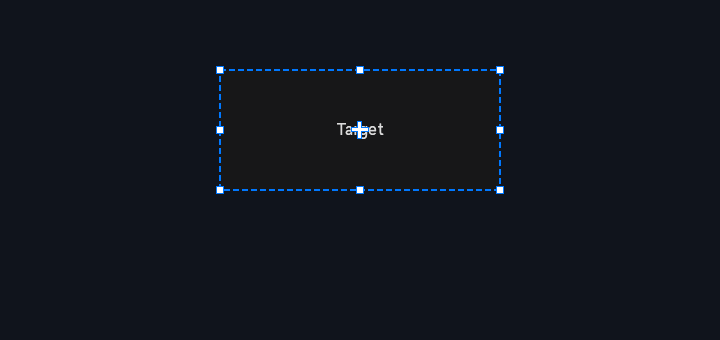

4.10 HandleControl（变换手柄）
HandleControl 是编辑器类控件的选择框：附着于一个目标控件，提供8 个缩放手柄（NW/N/NE/E/SE/S/SW/W）+ 中心移动手柄 + 虚线选择框，拖拽实时修改目标的 setRect()。非拖拽时事件穿透给目标；目标被销毁时自动隐藏。继承链：HandleControl → ControlImpl → Control。

4.10.1 控件的创建
// C++（无参构造，需随后 setTarget）
HandleControl handle;
handle.setTarget(shared_ptr<Control>(target)); // 自动加入目标父容器并置顶
// 或 Builder
HandleControlBuilder().setTarget(target).setHandleSize(8.0f).build();
// C ABI（要求先有 target 句柄）
UIControlHandle h = UICornerstone_CreateHandleControl(g_inst, targetHandle, 80, 60, 200, 80, 1.0f, 1.0f);JSON 布局不支持 HandleControl（LayoutParser 未注册该类型）。目标销毁时经 weak_ptr 监控自动隐藏手柄。
4.10.2 控件的属性
HandleControl 为行为型辅助控件，无独立属性系统键；手柄尺寸/颜色/显隐均为 C++ 成员 API 直接访问（setHandleSize / setMinSize / setHandleColor / setHandleVisible 等），成员字段见 4.10.5 样例。
4.10.3 控件的回调
无专有回调（拖拽结果直接反映在目标控件的位置/尺寸上）。
4.10.4 JSON 语法
不支持（无 "handle-control" 类型分支）。
4.10.5 C++ Binding / 核心库样例
| 成员字段 | 类型 | 默认值 | 说明（C++ 成员 API） |
|---|---|---|---|
handleSize | float | 8.0 | setHandleSize：手柄方块尺寸（像素） |
minWidth / minHeight | float | 20 / 20 | setMinSize：目标最小尺寸钳位 |
handleFill | SColor | 白 | 手柄填充色 |
handleBorder | SColor | 蓝 | 手柄边框色 |
activeFill | SColor | 蓝 | 拖拽中高亮色 |
selectionColor | SColor | 蓝 | 虚线选择框颜色 |
corner / edge / move / selectionBox 可见性 | bool | 均 true | 四个显隐开关 |
// C++ 核心库：附着 + 拖拽调整目标
auto target = make_shared<Button>(BENCH.get(), SRect(80, 60, 200, 80));
BENCH->addControl(target);
auto handle = HandleControlBuilder().setTarget(target).setMinSize(40, 40).build();
// 切换目标
handle->setTarget(otherButton); // 或 handle->detach();
// C ABI / Binding
auto target = ui->CreateButton("目标按钮", 80, 60, 200, 80);
auto handle = ui->CreateHandleControl(target, 80, 60, 200, 80);4.10.6 C ABI 调用样例
// 句柄控件包裹目标控件（拖动/缩放），目标经构造参数传入
UIControlHandle target = UICornerstone_CreateButton(g_inst, "Drag me", 40, 40, 120, 40, 1.0f, 1.0f);
UIControlHandle hc = UICornerstone_CreateHandleControl(g_inst, target, 20, 20, 160, 80, 1.0f, 1.0f);
// 无专有属性与事件；跟随通用操作
UICornerstone_SetRect(g_inst, hc, 20, 20, 200, 100);4.10.7 控件的方法（核心引擎内部 API，点击展开）
本节为核心引擎 C++ 类（include/ 头文件）的公开方法，仅源码级集成（直接使用核心类）可调用。只使用 C ABI / C++ Binding 的用户请按「控件的属性」键名（Set*/Get*）与「控件的回调」事件名（SetCallback）等价操作。
| 方法 | 参数 |
|---|---|
detach() | 分离：清状态、取消置顶、从父容器移除 |
draw() / handleEvent(Event) | 每帧校正自身 rect 跟随目标、重建手柄缓存、命中检测与拖拽 |
getTarget() | 查询目标（原始指针） |
isContainsPoint(x, y) | 恒返回 false（事件穿透的关键） |
setActiveColor(SColor) / activeColor() | 拖拽高亮色（默认蓝） |
setCornerHandlesVisible(bool) / setEdgeHandlesVisible(bool) / setMoveHandleVisible(bool) / setSelectionBoxVisible(bool) | 四角手柄 / 四边手柄 / 移动手柄 / 选择框显隐（均默认 true） |
setHandleColor(SColor fill, SColor border) / handleFillColor() / handleBorderColor() | 手柄填充 + 边框色（默认白填充 / 蓝边框） |
setHandleSize(float) / handleSize() | 手柄方块大小（默认 8.0） |
setMinSize(float w, float h) / minSize() | 目标最小尺寸约束（默认 20×20） |
setSelectionColor(SColor) / selectionColor() | 虚线选择框颜色（默认蓝） |
setTarget(shared_ptr<Control>) / setTarget(Control*) | 附加到目标（shared_ptr 版本监控生命周期并自动加入目标父容器；裸指针版本专为 C ABI，生命周期由调用方保证） |